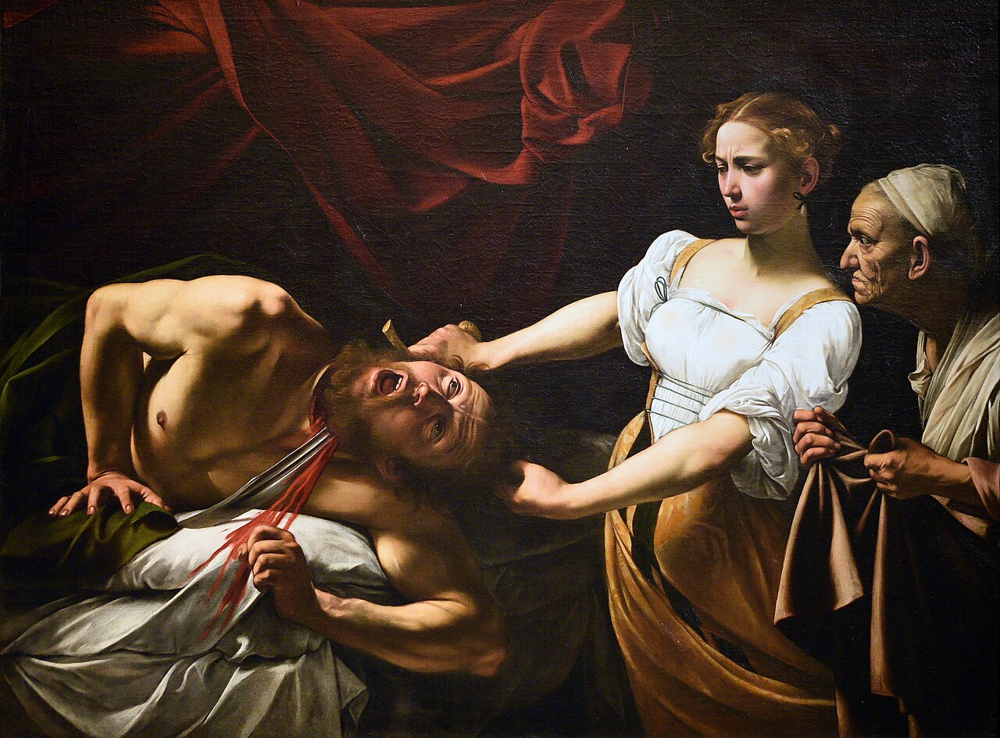

Galeri

XV–XX. yy
Doruk XVII. yy
Öne çıkan konu · Eski Ahit
Judith Kitabı
Judith ve Holofernes
30 eserde bu konu · 6 yüzyıla yayılır
Resimde nasıl tanınır?
Kılıç tutan zengin giyimli genç kadın ve kesik başı bir torbaya koyan yaşlı hizmetçi.
Grup ve çağ süzgeci
Hangi yüzyıllarda?
371 konu
8 yüzyıl izi
8 yüzyıl izi
Yüzyıla dokunup konuları süz
XIII – XX. yüzyıl
Resimde hikâyeleri tanı
Öne çıkan konular
16 seçili konu